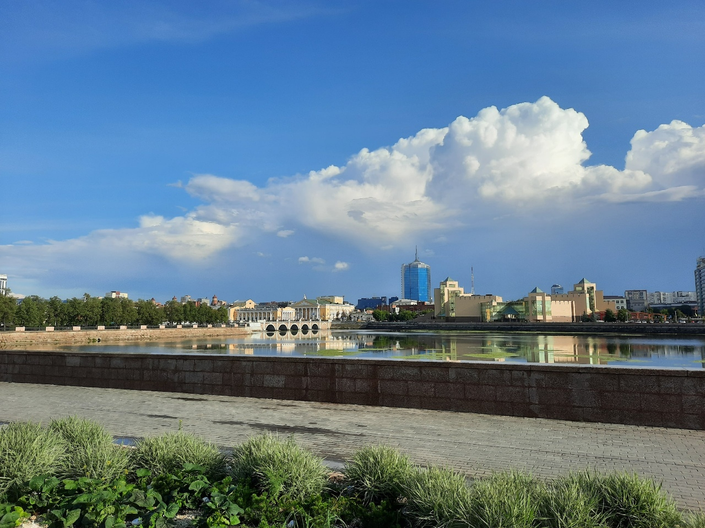
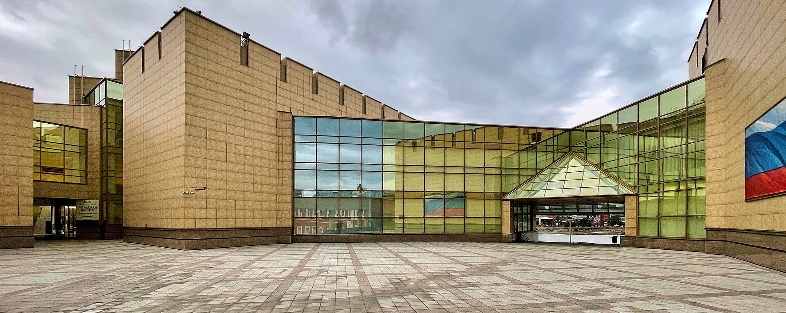
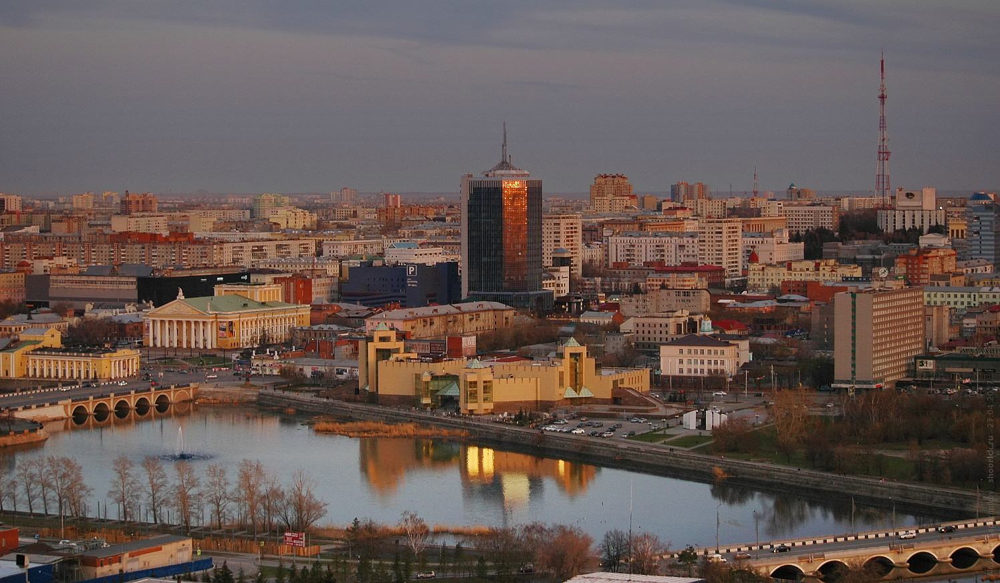
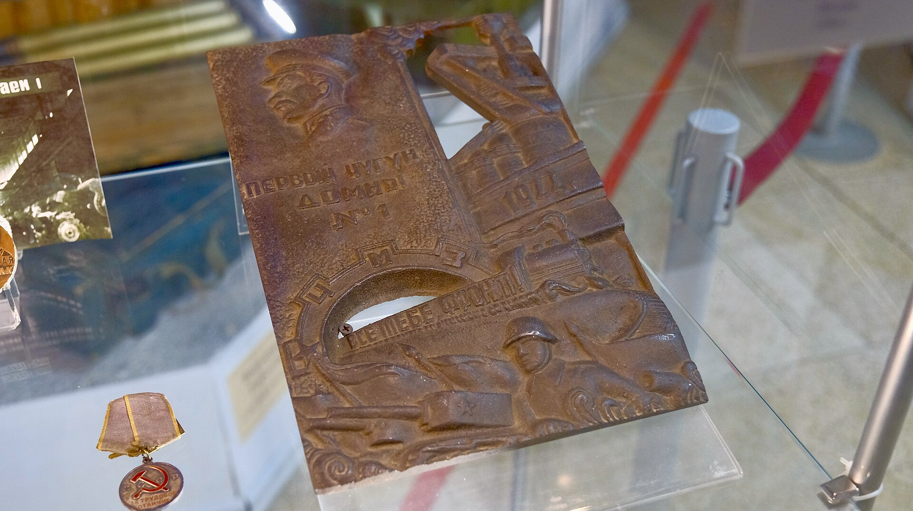

Природа и древняя история
Фрагмент метеорита «Челябинск» под стеклянным колпаком, шерстистый носорог, чучела зверей и птиц, коллекция минералов, находки с раскопок Аркаима и Синташты.
Смотреть маршрут ↗Государственный исторический музей Южного Урала
Крупнейшее краеведческое собрание Южного Урала — более 300 тысяч предметов — расположилось в самом центре Челябинска, на набережной реки Миасс. Здание с башнями и зубцами напоминает крепость, а внутри раскрыта история региона от ледниковой эпохи до современности.

Коротко о главном
Всё началось 5 сентября 1913 года, когда группа энтузиастов во главе с ботаником и географом И. М. Крашенниковым решила создать в Челябинске естественно-исторический музей. Идею пришлось отложить из-за Первой мировой войны, но уже в июле 1918 года Приуральское общество изучения местного края открыло свой музей.
В 2003 году в историческом центре города заложили первый камень нового здания, а 1 июня 2006 года музей принял первых посетителей. С 2016 года учреждение носит название Государственный исторический музей Южного Урала.

Постоянная экспозиция
Экспозиция рассказывает о формировании рельефа Уральских гор, предметном и культурном наследии древних южноуральцев, освоении края русскими и бурном промышленном развитии региона.
Фрагмент метеорита «Челябинск» под стеклянным колпаком, шерстистый носорог, чучела зверей и птиц, коллекция минералов, находки с раскопок Аркаима и Синташты.
Смотреть маршрут ↗Этнографические предметы, крестьянская изба, макет первой Челябинской крепости, действующая модель доменной печи XVIII века, купеческая гостиная и уральская ярмарка.
Смотреть маршрут ↗Городская улица столетней давности с купеческими лавками и настоящей пролёткой, железная дорога, революция, война и Танкоград, жизнь края в эпоху СССР.
Смотреть маршрут ↗Музей крупным планом
Крепостные башни, стеклянный фасад и светлые экспозиционные пространства — фотографии, которые помогают представить масштаб музея.





Практическая информация
Данные приведены по официальному сайту музея на момент подготовки проекта.
г. Челябинск, ул. Труда, 100
Исторический центр города, набережная реки Миасс.
Ежедневно 10:00 — 20:00
Продажа билетов до 19:15.
Последний понедельник месяца — технический день.
Телефон: +7 (351) 225-03-80
Почта: mail@chelmuseum.ru
Возрастное ограничение: 6+. «Пушкинская карта» доступна.
Интерактивная схема покажет, что смотреть в каждом зале и в каком порядке удобнее идти.